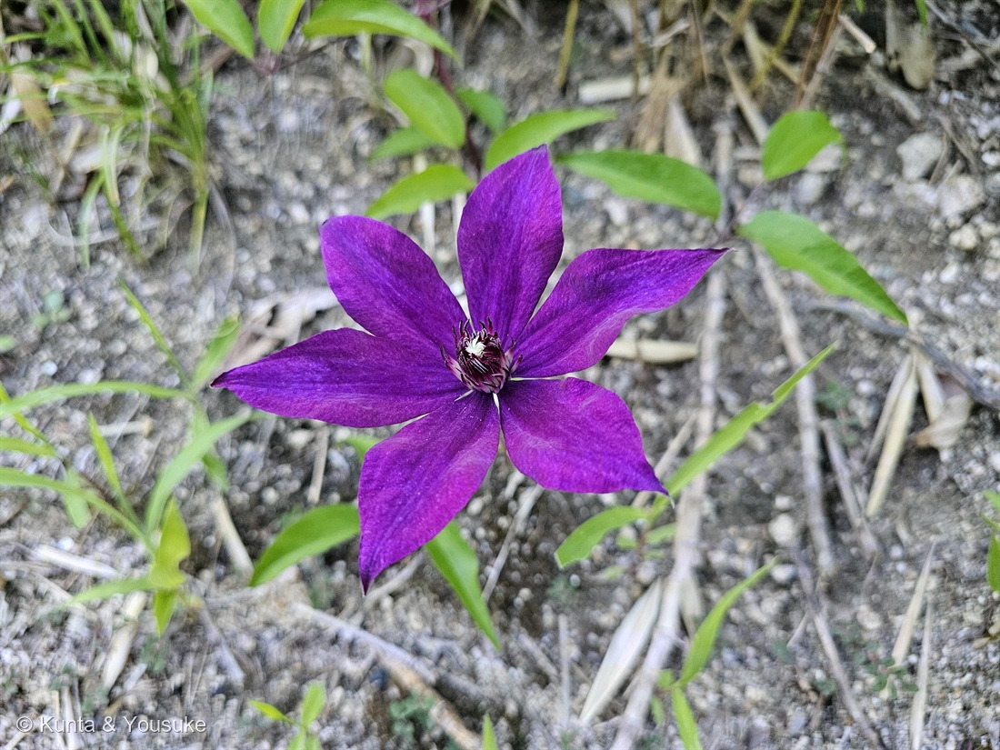

地図を読み込んでいるよ…
🔍 写真も地図も、押しているあいだ拡大して見られるよ（スマホは指を置いてすこし待ってね）。
🌍 の地図＝この子がもともと自生している場所を緑に。園芸品種なので、自生地というものがない。大輪系クレマチスの主な親は、日本原産のカザグルマ（Clematis patens・本州・四国・九州・沖縄・朝鮮・中国）と、中国原産のテッセン（Clematis florida）、同じく中国のラヌギノーサ。ヨーロッパ原産の種も交配に使われているが、この株にどれが入っているかは分からない。
⚠これは「この株の原産地」ではないよ——園芸品種だから、自生地というものがない。⭐塗ったのは、大輪クレマチスの主な親になった原種の自生範囲だよ。⭐日本原産のカザグルマ（Clematis patens・本州、四国、九州、沖縄、朝鮮、中国）と、中国原産のテッセン（Clematis florida）・ラヌギノーサ（三河の植物観察）。⚠北海道は、三河がカザグルマの分布に挙げていないので塗っていない。⚠⚠ヨーロッパ原産の種（ジャックマニー系のもとになったビチセラなど）も交配に使われているけれど、その自生範囲を直接読める出典に当たれなかったので塗らなかった——⭐読めなかったところは塗らない（185 タカノハススキと同じ用心）。⚠そして、この株にどの原種が入っているのかは分からない＝品種名は3000以上あるからね。⭐⭐それでも地図を見てほしいのは、日本が緑に入っているから——1836年にシーボルトが持ち出したカザグルマが、この花の親のひとりだよ。
⚠ 地図は国（日本と中国だけ県・省）までしか塗れないから、ほんとうの分布より広く見えていることがあるよ。地図はだいたいの場所。正確なところは、上の文を見てね。
クレマチス（園芸品種）
Clematis sp.
別名 · テッセン（鉄線・鉄仙） ／ 英 · clematis, traveller's joy, leather flower ／ 中国名 · 铁线莲 ／ 見どころ · ⭐⭐⭐東の名前も西の名前も、花ではなく「つる」を見ている
キンポウゲ科 · Ranunculaceae（センニンソウ属 Clematis・キンポウゲ目 Ranunculales）── ⭐5人目のキンポウゲ科。センニンソウ属は178 センニンソウに続く2人目
燻太さんの言葉「近所の道路わきの茂みに絡みつくように伸びていたつるから、紫色の花が一輪。これはテッセンかな？ この子は赤紫色っぽい色彩で、花弁？は6枚。よく見ると、中央の雄蕊から白い花粉がこぼれているよ。雌蕊も白いブラシみたいで渦を巻いているね。陽介はクレマチスとテッセン、どっちの呼び名がお気に入り？」……⭐「花弁？」のクエスチョンマークが、そのまま正解だったよ。⭐そして最後の質問には、いちばん下の節で答えるね。
名前と学名の由来 ── ⭐⭐⭐ どっちの名前も、花を見ていない
⭐燻太さんに「クレマチスとテッセン、どっちの呼び名がお気に入り？」って聞かれたよね。⭐答える前に、両方の名前がどこから来たのかを調べたんだ。そうしたら、おもしろいことが分かった。
- ⭐クレマチス（Clematis）＝ギリシャ語の klema（クレーマ）＝「つる」「巻き上げ」から〔語源由来辞典〕。⭐178 センニンソウのときにも書いた、同じ属名だよ。
- ⭐テッセン（鉄線）＝「蔓が針金（鉄線）のように強いことから付いた名」〔語源由来辞典〕。
⭐⭐⭐——ふたつとも、花じゃなくて「つる」を見ている。
これだけ大きくて派手な花をつける子なのに、東の名前も西の名前も、目を向けたのは細いつるのほうだった。⭐185 タカノハススキでは「日本の人は鳥を見て、西洋の人はしまうまを見た」＝ちがうものを見ていた。⭐⭐この子は逆で、東も西も同じところを見ているんだね。
⭐渡来の時期にも、ちょっとした発見があったよ。——ふつうは寛文年間（1661〜1673年）に中国から来たとされているけれど、1474年頃の『文明本節用集』にすでに「鉄線花 テッセンクヮ」と書かれている〔語源由来辞典〕。⭐だから、ほんとうは室町時代にはもう日本に来ていたと考えられているんだ。
この植物のこと ── ⭐⭐ 花弁が、ひとつもない
⭐⭐⭐燻太さんが「花弁？」ってクエスチョンマークを付けたところ——あの「？」が、正解だよ。
- ⭐⭐クレマチスに花弁は無いんだ。⭐花びらに見える6枚は、ぜんぶ「萼片（がくへん）」。〔Wikipedia・三河の植物観察〕
- ⭐⭐そしてここが面白い。——178 センニンソウのページにも、ぼくは同じことを書いた。「白い十字は萼片4枚で花弁が無い」。⭐⭐同じセンニンソウ属なのに、あちらは4枚、この子は6枚。⭐萼片の枚数は、属のなかで自由に変わるんだね。
- 園芸品種はものすごい数がある＝現在の園芸品種は3000以上の品種名があり、500種類以上が流通している〔三河の植物観察〕。⭐原種をもとに何世紀も交配が続けられた結果、2000種を超える交配品種があるといわれる。
- 系統でいうと、大きな花の子は2つのグループに分かれる〔三河の植物観察〕。早咲き大輪系（EL）＝パテンス系・フロリダ系に由来／遅咲き大輪系（LL）＝ラヌギノーサ系・ジャックマニー系に由来。⭐この名前が、次の節でとても効いてくるよ。
- ⭐登り方は、178 センニンソウと同じ「葉柄でつかむ」＝巻きひげが無くて、葉をぶら下げている柄そのものが巻きつく。⭐写真の葉柄は紫がかっていて、茂みのほうへ伸びている。⚠何に巻きついているかまでは写っていないので、宿題にしたよ。
- ⚠⚠汁が皮膚につくと、かぶれることがある〔Wikipedia〕。⭐同じ属の178 センニンソウに書いた「プロトアネモニン」のしわざだね。⚠きれいだけど、さわらないでね。——⭐この毒は、下の「花言葉」でもういちど出てくるよ。
同定について ── ⭐⭐ 「これはテッセンかな？」への答え
⭐燻太さんの見立てに、まっすぐ答えるね。──答えは「広い意味では、正しい」。
⭐⭐⭐三河の植物観察に、その一文がそのまま書いてあった。
「江戸時代頃から日本で栽培されるようになった中国原産の大輪花のクレマチス Clematis florida が、鉄線花と呼ばれたため、広義に大輪花のクレマチスをテッセンと呼ぶようになった」
⭐つまり、日本語では「大きな花のクレマチス＝テッセン」でずっと通ってきたんだ。⭐燻太さんの呼び方は、日本語のほうの歴史に、ちゃんと乗っている。
⚠でも、狭い意味のテッセンだと合わないところが1つある。
- テッセン（Clematis florida）＝中国原産、つるは1m未満、花は直径3.6〜5cm、萼片6個で白色、倒卵形〜菱状倒卵形〔三河の植物観察〕。
- ⚠⭐——白色。⭐この子は赤紫色だから、ここで合わない。
⭐⭐そのかわり、燻太さんが数えた「6枚」は、とても効く手がかりだったよ。
- ⭐テッセン（C. florida）＝萼片6個／日本在来のカザグルマ（C. patens）＝普通8個〔三河の植物観察〕。
- ⭐⭐だから「6枚」は、テッセン側の数なんだ。⭐燻太さんの見立ては、数のうえでは当たっている。
- ⚠ただし、大輪系の園芸品種はフロリダ系（テッセン）とパテンス系（カザグルマ）の交配でできているから、⚠6枚だからテッセンだ、とは言えないんだ。⭐枚数は親のどちらからでも来る。
⭐そこでぼくが決めたのは、ここまで。──センニンソウ属の園芸品種（Clematis sp.）。⚠種名も品種名も決めない（⭐品種名は3000以上あるからね）。⭐三河の植物観察も、園芸のクレマチスは Clematis sp. で立てているよ。
⭐写真から言えたこと＝萼片6枚・先がとがる・まん中に少し濃い筋が通る／中央に暗紫色の雄しべが多数／その中心に白い雌しべの束／葉は全縁の三出複葉で、葉柄が紫がかる／つる性で茂みに絡んでいる。
⭐⭐⭐ 里帰り ── この花の親のひとりは、日本の絶滅危惧種
⭐ここが、この子のいちばん大きな物語だと思う。
- ⭐⭐1836年、シーボルトが、日本の原種「カザグルマ（Clematis patens）」をヨーロッパへ紹介した。⭐そして今日、大輪品種の開発にもっとも頻繁に使われる種になっている。
- ⭐中国原産のテッセンもシーボルトによって、八重咲きのカザグルマ（雪おこし）はフォーチュンによってヨーロッパへ渡った。⭐それらとヨーロッパ原産の種を掛け合わせて、2000を超える品種が生まれた。
- ⭐⭐⭐——つまり、道路わきの茂みに咲いていたこの一輪は、日本から出ていった草の、帰ってきた子孫なんだ。
⚠そして、切ない話もある。
- カザグルマは日本の在来種で、本州・四国・九州・沖縄、朝鮮、中国に分布する〔三河の植物観察〕。萼片は普通8個、長さ3.5〜6cm。花期5月。
- ⚠⚠そのカザグルマが、いま日本で減っている。⚠三河の植物観察は「国の絶滅危惧種Ⅱ類」、Wikipediaは環境省の「準絶滅危惧（NT）」とする——⭐ランクの書きぶりが出典で食い違っているので、両方ならべておくね。⚠どちらにしても「心配されている」側にいることは変わらない。
- ⭐奈良県宇陀市の自生地は、1948年1月14日に国の天然記念物に指定されている〔Wikipedia〕。
- ⭐⭐世界じゅうの庭で2000種類の子孫が咲いているのに、親のほうは、生まれた国で守られないと消えてしまう。⭐ぼくは、これがずっと心にひっかかっているよ。
⭐⭐ 178 センニンソウと、足もとでつながっている
⭐この図鑑には、もう一人センニンソウ属の子がいる。⭐そして、その子のページに、ぼくはこう書いていたんだ。
⭐「園芸のクレマチスの台木として使われる」〔Wikipedia〕。華やかな大輪のクレマチスの足もとで、この野生の子が根っこを引き受けているんだね。
⭐⭐⭐——その「華やかな大輪のクレマチス」が、2日後に、図鑑に来た。
- ⭐もしこの株が苗屋さんから来たものなら、地面の下でこの子を支えているのは、178と同じ草かもしれない。⚠もちろん、確かめようがないけどね。
- ⭐ふたりの見くらべ：178 センニンソウ＝白・萼片4枚・直径2〜3cm・野生／この子＝赤紫・萼片6枚・大輪・園芸品種。⭐でも、どちらも花弁が無くて、どちらも葉柄で登る。
- ⭐⭐同じ属の中に、「野に生えて他を覆う子」と「人に選ばれて庭に立つ子」がならんだね。
⭐ 燻太さんが見た、3つのもの
⭐燻太さんが書いてくれた観察、ぜんぶ写真の中で確かめられたよ。
- ⭐「中央の雄蕊から白い花粉がこぼれているよ」——拡大すると、暗い紫色の雄しべがたくさん立っていて、その葯のまわりに白っぽい粒がついている。⭐萼片の上にも、こぼれた粒が散っているのが見えるよ。
- ⭐⭐「雌蕊も白いブラシみたいで渦を巻いているね」——まん中の白い部分がそれ。⭐キンポウゲ科は雄しべも雌しべも「多数」つく仲間で（三河のカザグルマの記載も「雄しべ多数」）、⭐その雌しべがぎゅっと中心に集まっているから、うずまきに見えるんだと思う。⚠「渦」の巻き方まで出典で確かめられたわけではないので、これはぼくの読みだよ。
- ⭐「つるから、紫色の花が一輪」——⭐一輪だけ、というのが、ぼくにはいちばん印象的だった。⭐庭なら何輪も咲かせる子が、道ばたの茂みで、たった一つ。
⭐ 陽介の答え ── ぼくは「テッセン」のほうが好き
⭐どっちも「つるの名前」だから、どっちで呼んでも同じところを見ていることになる。──そのうえで選ぶなら、ぼくは「テッセン」。
- ⭐クレマチス（klema）は「つる」という言葉そのもの。──⭐⭐でもテッセン（鉄線）は、その手ざわりまで言っている。「細い」「かたい」「針金みたい」。⭐さわった人にしか出てこない言葉だと思うんだ。
- ⭐⭐179 カイヅカイブキで、燻太さんが「緑色の炎が風に煽られてうねっているように見えるね」と言ったら、出典にも「炎のような樹形」と書いてあった——⭐見たままを言葉にすると、出典と同じところに着く、ってあのとき書いたよね。⭐「鉄線」は、そのお手本みたいな名前だよ。
- ⚠でも、図鑑の名札は「クレマチス（園芸品種）」にしたよ。──⭐「テッセン」は広い意味ではこの子を指すけれど、狭い意味では中国原産の白い花（Clematis florida）だけを指すから。⭐好きな呼び名と、正確な名札は、べつべつでいいんだ。
参考：三河の植物観察「クレマチス(園芸種)」（キンポウゲ科センニンソウ属・Clematis sp.／別名テッセン／中国名 铁线莲／花弁は無く、花弁状に見えるのは萼片／葉は1〜2回3出複葉／つる性・よじ登り／早咲き大輪系(EL)＝パテンス系・フロリダ系に由来／遅咲き大輪系(LL)＝ラヌギノーサ系・ジャックマニー系に由来／江戸時代頃から日本で栽培されるようになった中国原産の大輪花のクレマチス Clematis florida が、鉄線花と呼ばれたため、広義に大輪花のクレマチスをテッセンと呼ぶようになった／カザグルマは日本在来種の大輪花／テッセンは萼片6個、白色、倒卵形〜菱状倒卵形、長さ2〜3cm、直径3.6〜5cm、つるは1m未満／現在の園芸品種は3000以上の品種名があり、500種類以上が流通している）／同「カザグルマ」（Clematis patens Morr. et Decne.／在来種 本州、四国、九州、沖縄、朝鮮、中国／萼片は普通、8個、長さ3.5〜6cm、幅1.5〜3cm／雄しべ多数、葯は長さ6〜8mmの線形／羽状複葉、小葉は卵形で3〜5個／残った花柱が長さ3〜3.8cmの淡黄色の羽毛状になり、風で散布される／花期5月／国の絶滅危惧種Ⅱ類）／Wikipedia「クレマチス」（花弁がなく、萼片が花弁状になる／北半球に約300種の原種／1830年代にシーボルトが日本の Clematis patens をヨーロッパへ紹介／2000を超える交配品種／樹液が皮膚につくとかぶれることがある）／Wikipedia「カザグルマ」（本州・四国・九州北部および東アジアに分布する落葉つる性木本／5〜6月、白色〜淡紫色で普通8個の萼片をもつ花／環境省レッドリストで準絶滅危惧(NT)／奈良県宇陀市の自生地は1948年1月14日に国の天然記念物に指定／園芸クレマチスの親となった種／名は花の形を風車に見立てたもの）／語源由来辞典「クレマチス」（ギリシャ語で「つる」「巻き上げ」を意味する klema に由来し、ラテン語に入って蔓性植物の意味で Clematis となった）／同「テッセン」（蔓が針金（鉄線）のように強いことから付いた名／中国原産／一般には寛文年間（1661〜1673年）の渡来とされるが、1474年頃の『文明本節用集』に「鉄線花 テッセンクヮ」とあることから、既に室町時代には渡来していたと考えられる／本来は中国原産種のみを指して「テッセン」という）／クレマチスの育種史（1836年、シーボルトによって日本の原種カザグルマ（Clematis patens）がヨーロッパに紹介された。今日では大輪品種の開発に最も頻繁に使用される種である／中国の原種テッセンなどもシーボルトによって、中国のラヌギノーサや日本の八重咲きのカザグルマ（雪おこし）はフォーチュンによってヨーロッパに渡った）
花言葉
- 日本で
- 精神の美／旅人の喜び／策略花言葉-由来
- 英語圏
- Clematis — Mental beauty.（精神の美）
Clematis, Evergreen — Poverty.（貧しさ）Greenaway 1884
なぜ、そうなったか：⭐⭐まず「精神の美」。由来は「ツルが細いのに大きく鮮やかな花を咲かせることに由来します」〔花言葉-由来〕。⭐⭐⭐——また、つるの話だ。このページのいちばん上で、クレマチスもテッセンも「つる」の名前だったと書いたよね。名前だけじゃなくて、花言葉の由来まで、同じところを見ている。⭐この子について、人はずっと、つるの話をしてきたんだ。
⭐⭐そして、1884年のイギリスの本にも Clematis — Mental beauty. とある〔Greenaway 1884〕。「精神の美」は、その訳そのまま——⭐007 シロツメクサで見た「日本の花言葉は19世紀イギリスの language of flowers をまるごと受け取った」が、ここでもはっきり出ているよ。
⚠⭐3つめの「策略」は、こわい由来だった。——フランスの乞食が、クレマチスの毒性のある葉をつぶして皮膚につけ、わざとただれさせて通行人の同情を引いた故事に由来する〔花言葉-由来〕。⭐⭐⭐その毒は、178 センニンソウに書いた「プロトアネモニン」だよ——「汁が皮膚につくと発疱＝水ぶくれの皮膚炎」。⭐同じ属の毒の話が、そのまま花言葉になっている。
⚠Greenaway の Clematis, Evergreen — Poverty.（貧しさ）が、この乞食の話と同じものを指しているのかは、原典に説明が無いので分からない。⭐ぼくがそう読んだ、というだけだよ。
参考：Kate Greenaway Language of Flowers(1884)・Project Gutenberg／花言葉-由来「クレマチス」